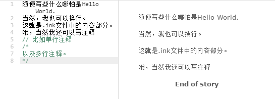
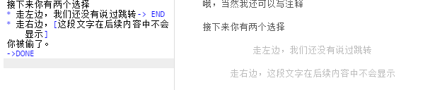
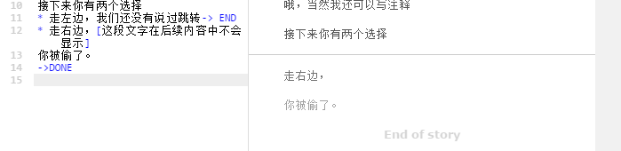
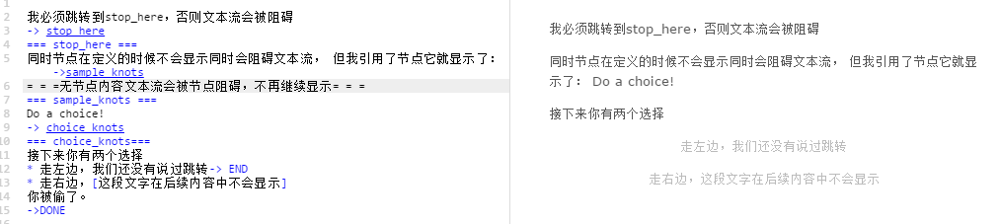
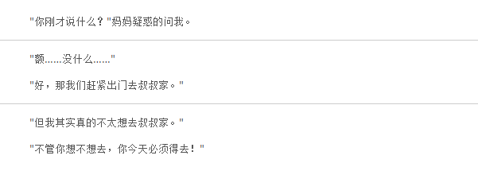
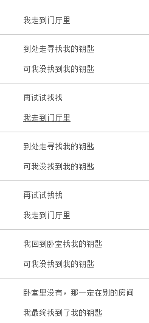

引言
大家好，这是一篇介绍ink的文章。
ink是由inkle公司推出的一种脚本式的文字预处理语言用来编写一些对话类游戏的对话内容及流程图。inkle公司做出过一些很棒的对话类游戏，如《80天环游地球》。
初次浏览，ink像是带有逻辑的小说文本，通过简单的符号标记来组织内容文本以及对话的流程。
但ink的整体教程看下来，可以看出inkle是把ink作为一个脚本语言而非文本标记语言来设计的。不过我个人认为，ink的逻辑部分设计的有一些复杂，这使得该语言介于脚本语言和带有逻辑的小说文本之间，但又两边都不太讨好。
但这并不妨碍我们学习他们的思路，看看他们认为文字游戏的内容应该如何被组织起来。
快速感受ink的魅力，从官方的在线编辑器开始。
而除却上面说到的在线编辑器，inkle公司针对ink还提供了三个开源项目：
其中，inky是一个非常赞的ink编辑器，它会实时的编译你的脚本并向你展示一个可以互动的文本流。
第一部分：基础语法
1) 内容-Content
内容其实就是最简单的文字，编辑器会将内容原封不动的展现。
同时，ink允许用户添加注释。
示例如下：

2)选择-Choices
一个简单的选择就是* 后面跟选项，然后接着写对应选项的内容。直到遇到跳转符号或者另一个选项或者结尾。
示例如下，选择前：

选择走右边之后：

由于选择的截图稍微难截一些，后续我会使用
1：走左边
2：走右边
来代替选项，使用
1>走左边的结果
来代替我的选择以及对应显示的文字。
3)节点-Knots^knots
节点是一整段的文字内容，他可以被其他的内容引用或者跳转。
节点的声明格式如下
=== 节点名称， 由字母数字下划线组成 ===
在上文中我们没有声明节点的内容被称作无节点内容，而无节点内容文本流会被节点阻碍，不再继续显示。
同时，当脚本内不存在无节点内容时，程序将自动寻找第一个节点作为起始对话节点。
而我认为，节点是ink中的内容基础单元。他们被各种形式的逻辑串在一起形成文本流。
节点示例如下：

4)跳转-Diverts
在ink中，跳转是指从某一内容后跳转/链接到另一节点。
被跳转的内容可以是无节点内容或者节点，但是跳转的目标必须是一处节点内容。因为跳转声明时，必须指定跳转的目标，一般来说目标为已声明好的节点名。
在上文的实例中，我们已经看到了不少跳转的使用用例。跳转的声明方法是：
-> 欲跳转的节点名
比如在节点一章的示例中:
我必须跳转到stop_here,否则文本流会被阻碍
-> stop_here
意思是从此处接入stop_here处的内容，最终显示结果为
我必须跳转到stop_here,否则文本流会被阻碍
同时节点在定义的时候不会显示同时会阻碍文本流…………
值得一提的是，ink提供了一种类似于连字符的东西，黏结-glue对应的符号是：<>。使用<>来修改刚才的示例：
我必须跳转到stop_here,否则文本流会被阻碍<>
-> stop_here
则”……阻碍”后面会忽略换行，等同于
我必须跳转到stop_here,否则文本流会被阻碍-> stop_here
这样的写法。最终显示结果为:
我必须跳转到stop_here,否则文本流会被阻碍同时节点在定义的时候不会显示同时会阻碍文本流…………
5)分流-Branching The Flow
分流实际上并没有语法规定，他是一种逻辑概念。主要是指从一个节点通过选择跳转到若干节点的行为。
节点和跳转组合起来形成最基础的故事流，这是一种较为扁平的结构。剧本作者可以直接单拉某一个节点或者某一段故事流出来编写而不用担心结构过于混乱，或者需要追踪某一分支的状态。
常见的ink脚本从第一个节点开始，顺着拥有着各种分支的庞大故事流走向最终的end节点。
6)导入和子节点-Includes and Stitches^stitches
节点实际上可以被细分，细分出来的就是子节点。而任何子节点都应该具有唯一的名字(名字应该有字母数字以及下划线组成)以便被引用。
子节点的声明方式是在父节点内用= 子节点名称来声明，示例如下:
=== 一个父节点 ===
父节点的内容反而会被忽略
= 第一个子节点
直接跳转到父节点而不指定子节点名将默认显示第一个子节点
= 第二个子节点
第二内容用来示范节点内跳转->将会被引用子节点
= 将会被引用子节点
一些不是废话的内容
同节点一样，子节点在声明后并不会被显示出来。必须引用才会显示对应的内容。而引用子节点时有些像面向对象语言中的对象名.方法名这种使用方式。示例如下
我要引用之前定义的子节点了 ->一个父节点.将会被引用子节点
显示效果为
我要引用之前定义的子节点了
一些不是废话的内容
与节点类似，字节的名称并不会作为内容的一部分被显示出来。
当你试图跳转到节点本身，而这个节点内部有子节点时，第一个子节点将被显示。如示例:
我要引用之前定义的子节点了 ->一个父节点
将会被显示为
我要引用之前定义的子节点了
直接跳转到父节点而不指定子节点名将默认显示第一个子节点
同时，节点内部可以做子节点本地的跳转（此处注意看第二个节点的内容定义）：
我要引用之前定义的子节点了 ->一个父节点.第二个子节点
显示为：
我要引用之前定义的子节点了
第二内容用来示范节点内跳转
一些不是废话的内容
需要注意的是，子节点不得与父节点同名，但不同父节点中的子节点可以重名。
与其他脚本语言相似的是，ink允许用户导入/包含另一个脚本文件，使用示例如下
INCLUDE 另一个脚本文件.ink
INCLUDE 又一个脚本文件.ink
针对INCLUDE语句，有两点说明
- INCLUDE语句应该始终保持在整个ink文件的最顶端，同时不应该在某个节点内。
- INCLUDE了某个文件后，并不是必须要使用这个文件的内容。
8)不同类型的选择 - Varying Choices
后备选项 - FallbackChoice
一般来说，默认的用*号来修饰的选择，只能使用一次。如以下ink脚本：
=== root_knots ===
现在有两个选择摆在你面前
* 你选了这个之后就只剩一个了->root_knots
* 1号选项只能用一次，于是只剩下2号选项了->root_knots
* [] 没有涉及到的知识点，后备选项
一次选择第一，第二选项，然后显示结果如下
现在有两个选择摆在你面前1:你选了这个之后就只剩一个了
2:1号选项只能用一次，于是只剩下2号选项了1>你选了这个之后就只剩一个了
现在有两个选择摆在你面前
2:1号选项只能用一次，于是只剩下2号选项了2>1号选项只能用一次，于是只剩下2号选项了
现在有两个选择摆在你面前
先暂停一下这个故事流，当玩家将两个选项都选择了之后，由于*号装饰的选项只能被选择一次，因此后来再返回父节点时，玩家将没有选择可以选。
因此ink提供了后备的选择，即当没有任何一个选项可以选择时，故事流将走向的一个选择线。我们在上文的ink文件中，已经看到了后备选项的定义方式，即*号后直接跟没有包含内容的一组中括号[]：
* [] 没有涉及到的知识点，后备选项
我们继续故事流，则接下来的显示流程是这样的：
……
……
2>1号选项只能用一次，于是只剩下2号选项了现在有两个选择摆在你面前
没有涉及到的知识点，后备选项
粘性选择 - Sticky choices
如果你想让选择摆脱选择一次即消失这个怪圈，你可以选则使用粘性选择。
粘性选择的声明就是讲普通选择的*号换为+号，如：
* 我仍然是一次性的选项
+ 只需简单的替换，我就是粘性选择
这样，玩家就可以不断的选择第二项。
条件选择
ink还提供一系列带有逻辑的条件性选项，如果条件满足，这些选项会出现，否则便不会出现。
条件性选择的定义语法为选择符号(*或者+)后跟一对花括号，然后花括号内写与节点相关的条件，示例如下:
* {not gohome} 如果你还没回家的话这个选项会被显示
* {gohome} 如果你回过家至少一次的话，这个选项会被显示
* {gohome}{not goshop}你回过家并且没去过商店，你的妈妈会骂你
* {gohome > 2}你今天回家次数超过了两次，所以你会看到这个选项
从上述示例中，我们可以得知，条件选择 可以被not修饰，用来表达没访问过某选项。同时条件选择也可以计数。
其实本质上来说，条件选择的原理其实是某个节点的访问计数。比如我没回过家，则我回家的访问计数为0，那么{not 回家} 的结果就为正确（TRUE）的。同时，{回家}的结果就是错误的。
这有一些类似于C语言的样子，即0为错误，除0以外的值为正确。因此当我回家三次的时候，{回家}和{回家 > 2}是同时正确的。
关于ink的更多变量与逻辑部分，我们将在后续的某些章节继续深入。
9)变量文本
列表文本
当我们想让语句根据访问次数呈现不同变化时，可以使用列表文本来达成这一目标。
首先是最简单的列表文本，定义方式为一个花括号，内部书写若干个想要加入到列表中的文本，文本间用 | 隔开，示例如下：
=== root_knots ===
这是我第{一|二|三|N}次访问这个节点
循环访问节点，将出现如下显示
访问次数：1
这是我第一次访问这个节点
访问次数：2
这是我第二次访问这个节点
访问次数：3
这是我第三次访问这个节点
访问次数：4
这是我第N次访问这个节点
访问次数：5
这是我第N次访问这个节点
第五次的时候，访问的次数超过了列表内元素的数量，因此将不断显示列表最后一个元素。
接下来是循环列表文本，循环列表的声明方式是在简单列表花括号内，列表内第一个元素前添加&符号，示例如下：
今天是周{&一|二|三|四|五|六|日}
这样，当你第8次访问该节点时，该节点显示内容便为“今天是周一”。
单次列表，声明方式为将循环列表的&换为!。这种列表的性质是当访问次数超出列表内元素数量时，列表将不会显示任何文本出来，即：
这里有{!一堆|一个}东西。
三次访问显示结果分别为
1.这里有一堆东西
2.这里有一个东西
3.这里有东西
随机列表，声明方式为将循环列表的&换为~，若干次访问中会随机显示列表内的元素。声明方式如下：
我从抽奖袋里拿出一个{~一等奖|二等奖|三等奖|安慰奖|谢谢惠顾}
列表的性质
列表具有如下性质：
- 列表可以包含空元素，如{1||2|3}
- 列表可以嵌套列表，如{1{2|1}|2|3}
- 列表可以包含跳转语句，如{1|2|列表内跳转到3_knots ->3_knots}
- 列表也可以用在选择的选项文本中，但要记得不要用在开头，否则会和条件选择冲突。
条件文本
条件文本有些类似于程序语言中三目运算符，它提供了一种针对是否访问过某个节点进行判断，如果访问过显示某一项内容，如果没访问过显示另一项内容。声明方式为{节点名称:访问过节点对应显示内容|未访问过节点对应显示内容}，示例如下：{test_knots:我访问过这个节点|我没有访问过这个节点}
但令我个人迷惑的是，一开始我以为条件文本跟条件选择一样，本质上是读取节点的访问计数来做一些判断，根据结果来判断最终显示的文本，实际上并不是这样的，例如我写：
{test_knots > 3:我访问过这个节点|我没有访问过这个节点}
那么不论我访问test_knots多少次，这个条件文本的显示内容仍然是“我没有访问过这个节点”
额外一提，没有访问过节点对应的内容可以不填，即可以写成：
{test_knots:我访问过这个节点}
这种写法当你没有访问过对应节点时，这个条件文本对应的显示内容将直接留空。
10)游戏查询 - Game Queries
ink提供了一些内建函数来供玩家查询一些游戏中的数据信息。
CHOICE_COUNT
CHOICE_COUNT用来返回当前选择提供的选项数，使用示例如下：
- TestA
- TestB
- {CHOICE_COUNT() == 1} TestC
第一次做这个选择的时候将提供两个选项，TestA和TestB。此时CHOICE_COUNT()应该为2，因此TestC不显示。
当玩家选择了其中任何一个选项后，由于选项为单选，当再次做这种选择的时候，选项只剩一个，因此TestC将符合条件，被显示出来。
不难看出，CHOICE_COUNT的另一层隐含意义是只对会显示的选项计数。
TURNS_SINCE
返回自从到达某个节点后，又“移动”了多少个节点，声明示例如下：
* {TURNS_SINCE(-> test_knots) > 2} 这个选项的显示条件是在玩家访问了test_knots这个节点后，又访问了至少三个其他节点。
第二部分：编排^weave
1)聚合
聚合可以使得因为选择而分开的故事流重新聚拢起来。
声明方式是在语句前加符号”-“，使用示例如下：
“你刚才说什么？”妈妈疑惑的问我。
* “额……没什么……”
* “算了你当我没说”
- “好，那我们赶紧出门去叔叔家。”
* “啊，好吧，说实话，我刚才说的是我并不想去叔叔家。”
* “但我其实真的不太想去叔叔家。”
- “不管你想不想去，你今天必须得去！”
这段文字有两处选择，第一次选1，第二次选2，显示结果如下：

不难看出，所谓的聚合就是不论选项是什么，最终跳转到一个固定的结果。这给开发者提供了一种，玩家看似有选择，实际上所有的选择都归根都一个结果的开发手段。
官方认为，这比编写同一个节点并跳转过去要优雅一些，省去了开发者追踪节点的时间，同时降低了出错的可能性。这也提供了更加优秀可读性。
2)嵌套流
所有的故事流都允许嵌套。其中，选择与聚合应该是最常用的嵌套流，示例如下：
这是父流
* 父流-子流1
* * 父流-子流1-子流1
* * 父流-子流1-子流1
- - 父流-子流1聚合
* 父流-子流2
- 父流聚合
嵌套的层级是没有限制的，你可嵌套若干多你喜欢的层级。但是嵌套这种用法可能会带来一些混乱，所以需要开发者去适应一下（其实有点像代码中的缩进）。
3)编排导航
首先要说明的是，编排是无法寻址的。我们没办法在后续的章节使用跳转等方式来返回某一处编排。
当然，我们可以使用设立节点和节点名称等方式，但是官方更推荐的是使用标记。
标记的声明方式是使用括号括起标记名(标记名)，使用示例如下:
我走到门厅里
+ {searchAgain}到处走寻找我的钥匙
* (bedroomOver)我回到卧室找我的钥匙
- 可我没找到我的钥匙
* {bedroomOver}卧室里没有，那一定在别的房间
+ 再试试找找-> searchAgain
- 我最终找到了我的钥匙
实际选择结果如下

在第一步选完1后，其实只有一个选项，再试试找找，原因是bedroomOver节点未访问，因此卧室里没有选项没有满足判断条件，不予显示。
从示例可以看出，标记与节点和子节点几乎是类似的，同样支持跳转和逻辑判断。
因此，与子节点相似的是，当你的标记位于某个节点内的时候，你必须使用节点名.标记名的方式来引用你的标记。
第三部分：变量与逻辑
1)全局变量
ink允许设置全局变量，即在任何地方都可以读取的数据。声明方式为VAR 变量名 = 初始值，示例如下：
VAR str_player_name = “hello world!”
VAR int_test = 5
VAR bool_any = true
VAR float_money = 6.2
VAR knots_other = -> the_all_die
从上面的例子可以看出，ink的变量支持字符串，整型，浮点型，布尔型以及ink自身的内容类型。
在声明之后，我们就可以在实际的ink编写过程中使用全局变量了。变量的使用方式如下：
这里会打印变量str_player_name:{str_player_name}
显示为：
这里会使用变量str_player_name:hello world！
你也可以使用变量来配合之前提到的一些判断语句。
2)逻辑
ink中也设计了一些逻辑语句。
首先，是变量运算的声明
~ int_test = int_test+3
~ bool_any = false
ink支持的数学运算符包括=-*/%。
3)条件块(if/else)
接下来是条件语句，if/else:
{
- int_test > 5:
你居然有那么多东西
~ bool_any = false
- int_test == 5:
你只有5个东西
~bool_any = false
- int_test == 4
你正好有4个东西，你现在可以选择
* 全部自己留着
* 给我两个
- else:
~ int_test = int_test+2
你东西太少了，给你两个，然后我们走吧
-> 某些实现定义好的节点
}
从上述例子中可以看出，条件语句中支持直接跳转以及语句运算，甚至支持嵌套选择。
ink同样提供了多行列表块，使用方式如下:
// 普通的列表，随着访问次数将固定显示在最后一个
{ stopping:
- I entered the casino.
- I entered the casino again.
- Once more, I went inside.
}
// 随机列表，每次访问都会从列表中随机一个值
At the table, I drew a card. <>
{ shuffle:
- Ace of Hearts.
- King of Spades.
- 2 of Diamonds.
‘You lose!’ crowed the croupier.
-> leave_casino
}
// 循环列表，随着访问次数的增加从列表中循环
{ cycle:
- I held my breath.
- I waited impatiently.
- I paused.
}
// Once:单次列表，所有的列表项只显示一次
{ once:
- Would my luck hold?
- Could I win the hand?
}
4)临时变量
ink也提供与全局变量对应的临时变量，声明方式为temp 临时变量名 = 初始值，示例如下：
~ temp int_temp_var_name = 5
临时变量只在声明的节点内有用。
临时变量的另一作用是参数，在跳转中，节点及子节点允许携带参数，见如下示例:
- 我打了他。
-> what_you_do(“打”)- 我骂了他。
-> what_you_do(“骂”)- 我踢了他。
-> what_you_do(“踢”)=== what_you_do(action) ==
你做了什么？？！！
没什么，不过是{action}了他。
{action != “踢”:幸好你没踢他|你居然踢了他}
实际显示结果将随着选项变化，如选我踢了他，则最终显示结果为：
你做了什么？？！！
没什么，不过是踢了他。
你居然踢了他
与其他程序语言一样，临时变量只在声明的节点内有用并且不会与其他节点的同名临时变量冲突。
ink支持另一种更有趣的玩法是将跳转节点作为参数传递。在这里仅给出官网示例：
=== sleeping_in_hut ===
You lie down and close your eyes.
-> generic_sleep (-> waking_in_the_hut)=== generic_sleep (-> waking)
You sleep perchance to dream etc. etc.
-> waking=== waking_in_the_hut
You get back to your feet, ready to continue your journey.
需要注意的是跳转过去的节点参数同样需要跳转符号->来修饰参数。
5)函数
节点带参跳转看起来像是函数，但实际上他们缺少了非常重要的一个概念——调用栈及返回值。
ink中的函数有如下限制及特性：
- 函数不能包含子节点
- 函数中不能使用跳转或提供选择
- 可以调用其他函数
- 可以包含需要显示的内容
- 可以返回任意类型的值
- 递归安全
使用函数的方式和定义节点的方式差别不太大区别就是要求在函数名前加function关键字。其中，返回语句的编写格式为：~ return 要返回的值
函数使用示例如下：
=== function hello_world ===
~ return “helloworld”
声明后便可直接类似于变量一般使用：
函数开口道：”{function_hello_world }”
显示结果为：
函数开口道：”helloworld”
与其他语言中的函数类似，函数允许嵌套调用。
函数也可以不返回任何值，仅仅进行一些操作。
函数可以和其他内容写在同一行，也就是不是必须要换行。
参数也可以使用引用的方式传递，声明方式如下：
=== function alter(ref x, k) ===
6)常量
与其他程序语言一样，ink允许定义常量。声明方式为:
CONST NAMEOFCONST = “常量”
常量需要在开头定义。
7)游戏端逻辑
ink可以接入游戏端逻辑，相关逻辑连接点此：运行ink脚本
尾声：未完待续
从项目活跃度来看，ink的github主页还在继续更新着，并且可以明显的看出inkle公司并没有停止对其的维护，因此相关文档将在使用到/有必要的时候继续进行更新，这篇文章就先到这里，算一个小阶段。